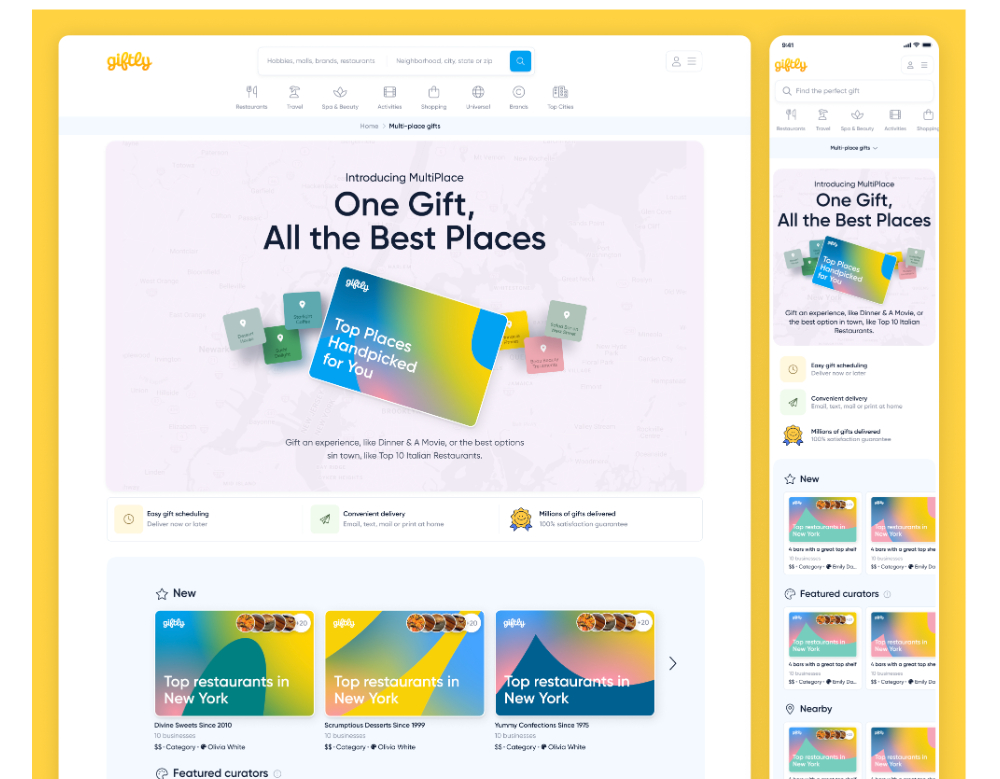
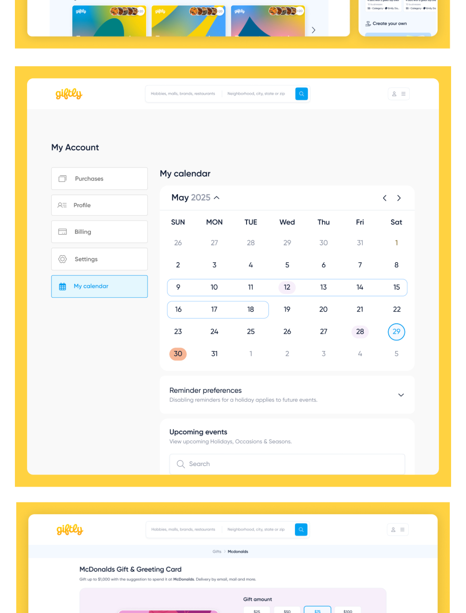
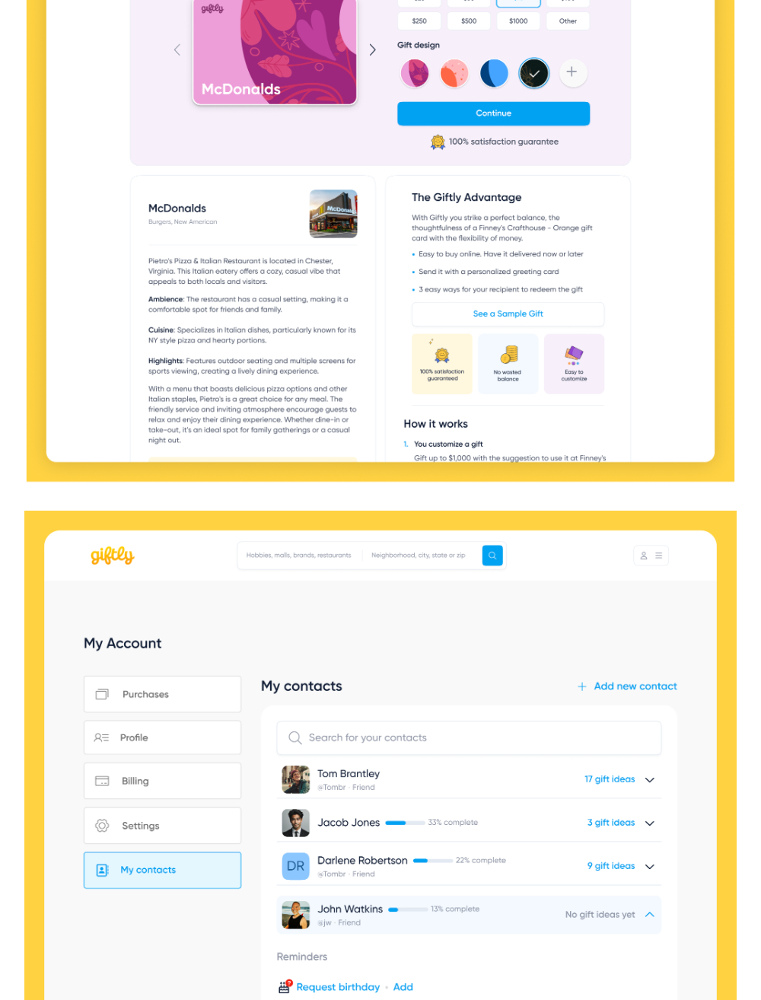
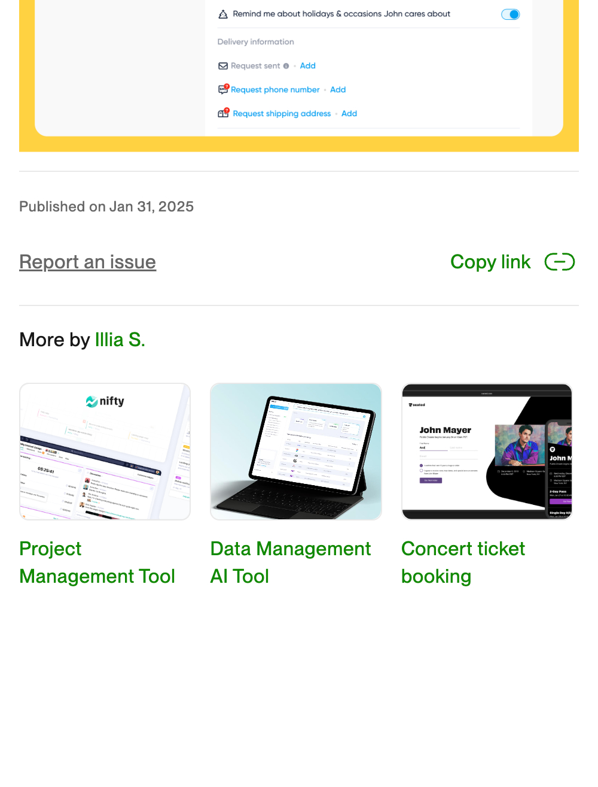

Giftly: one gift, all the best places
Overview
Redesigned Giftly's visual identity and gift marketplace, built a cohesive design system, and integrated it across every asset — web, mobile web, emails — then kept iterating on the core consumer flows.
My role
Senior Product Designer. Visual identity, design system, UX/UI for Home, Calendar, Events, social gifting.
Team
Timeline
May 2024 → present
Toptal engagement, then full-time
What Giftly is, and why it needed a redesign
Giftly lets you send a gift that works at any place — a restaurant, a spa, a whole city's worth of top spots — without the recipient being locked into one store. The product was solid; the experience around it had grown in layers. Different surfaces looked like different companies, the brand didn't carry through, and the key touchpoints (search, gift card builder, checkout, account) each had their own rules.
I joined through Toptal in May 2024 with a clear brief: make it feel like one product, and make the path from "I need a gift" to "sent" as short as possible. A few months in, Giftly hired me directly.
Three things that were holding it back
The last one became the biggest opportunity. People don't buy gifts; they remember birthdays, holidays, and the friend who just moved. A product that remembers with you earns a second and third visit.
How I worked
1. Audit, then a system
I started with a full inventory of every screen and email, grouped by component, and rebuilt the UI as a token-based design system in Figma: colour, type, spacing, radius, and a component library the engineers could map one-to-one. The refreshed identity kept Giftly's warmth — the yellow, the rounded shapes — and tightened everything else.
2. Streamline the key touchpoints
Search, the gift card builder, and checkout were redesigned as one continuous flow. The "MultiPlace" gift — one gift, a curated list of top places — got a proper home on the marketplace with curator cards, so the hero product no longer needed explaining.

3. Give the product a memory
My Calendar and My Contacts turn one-off purchases into an ongoing relationship: holidays and occasions you care about, reminder preferences, and a contact list where each person has gift ideas and a profile that fills in over time ("request birthday", "request shipping address").


What shipped
A single visual language across the marketplace, account, and emails; a faster gift builder; and the calendar/contacts layer that makes Giftly a place you return to. I continue to iterate on these flows with the team — small weekly improvements rather than one big launch.

Screenshots are from a portfolio export; higher-resolution ones are on the way.
Results
The part I'm proudest of isn't a number. It's that the product now has a memory — and the team has a system they can keep building on without me in every review.